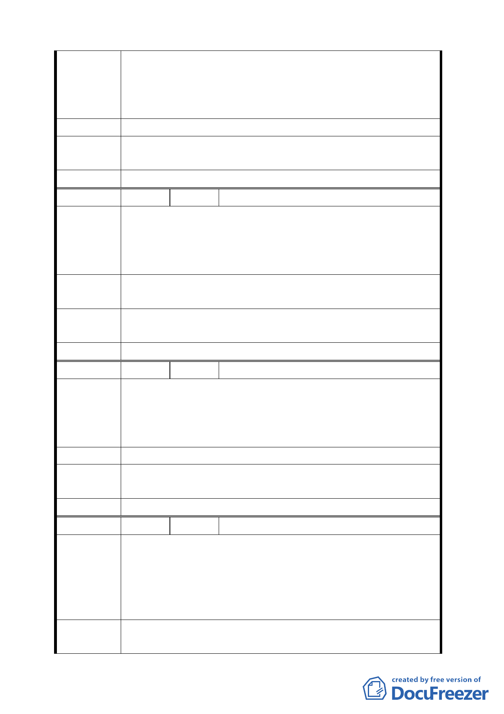

一、土地標示：士林區翠山段二小段 30.980.1014 等地號。
陳情理由
二、主管機關應維護政府公信力。
三、人民權益應予保障。
四、維護金融安定。
建 議 辦 法 政府應研擬解決機制,確保人民權益。
專案小組
審查結論
同編號 1。
委員會決議 同編號 1。
編 號 11 陳情人 陳勇助（住二十四）
一、土地標示：士林區翠山段二小段 1013 地號
二、第一類地區,依目前調查多屬地質敏感地區,若為如此 68
陳情理由
年即不應劃設為住宅區,似有圖利原地主之嫌，政府單位
應對過去錯誤政策負起責任。
建 議 辦 法 容積移轉(比照以開發地區如住 6-6,55%*60%=33%之容積),或
與市有建地等值交換。
專案小組
審查結論
同編號 1。
委員會決議 同編號 1。
編 號 12 陳情人 林天生（住二十四）
一、土地標示：士林區翠山段二小段 1026 等十三筆地號。
陳 情 理 由 二、本人土地正位於翠山派出所後面約數十公尺，已有巷道
通達，地勢平坦，全無山坡地之危險，比目前中央社區
任何一棟地勢更平坦。
建 議 辦 法 請派員會同實地勘查並維持原來的住宅區。
專 案 小 組 同編號 1。
審查結論
委員會決議 同編號 1。
編 號 13 陳情人 陽光士林開發股份有限公司（住二十六）
一、土地標示：士林區翠山段二小段 939.940.941 地號。
二、台北市政府即已於民國 68 年核定本保護區變更為住宅
陳情理由
區,基於信賴保護原則,應維持政策之一致性。若市府目
前經重新衡量後認為必須回復保護區,則應給予地主合
理補償。
建 議 辦 法 應依各地主將保護區變更為住宅區是因政府政策所造成之損
失,補償予各地主。
一一